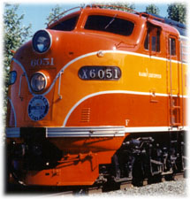

|
|
|---|
|
|
|---|

This N Scale Southern Pacific Roster is part of the
SP Mailing List FAQ
This page is hosted by
Rick Blanchard
Many questions have come up on the Southern Pacific email-list that ask if the SP had any GPxx or SDxx units and what paint scheme is appropriate for them. This listing is to give an easy reference for those questions. Most of the time these questions arise from new models that are produced. Some may or may not be available in Southern Pacific paint schemes, and the availability of a unit in SP colors is no guarantee that the colors are right for the modeled unit or that SP ever had one.
Note: Modelers designations for the units are used. The information includes data from Jim Semikoski, Richard Percy, Jim Bence and Tom Cataldo. Detail parts for SP are available from Sunrise and others. Additions and corrections are always welcome.
Top photo: SP E9A #6051 ©1997 Randy Houk, Used with permission
|
N Scale Model Locomotives in SP Livery |
|
|---|---|
| Plastic | |
| Arnold | |
| FP9A | NONE (T&NO rebuilt F3, F7 = F9m, F9Bm) |
| F9B | NONE |
| GP30 | (SP and SSW) Bloody Nose, SP light clusters |
| S-2 | (SP and T&NO) Interim Tiger Stripe (striped ends) |
| Atlas | |
| CPA 24-5 | ('C-Liner') NONE |
| E7 | Daylight, Golden State, Halloween(#6001), Bloody Nose |
| E8 | One A unit (#6018); EMD Demonstrator Paint, Daylight, Bloody Nose |
| FA-1 | NONE |
| GP7 | {SSW #304) Daylight, Black Widow (SSW Ver.) Bloody Nose |
| GP9 | Most high-nose - 20 low-nose; Black Widow (no low nose), Bloody Nose, Kodachrome |
| GP30 | (SP and SSW) Bloody Nose, SP light clusters |
| GP35ph1A, B | (SP and SSW) Bloody Nose, Kodachrome, SP light clusters |
| GP40 | (SSW) Bloody Nose, SP light clusters |
| RS-1 | NONE |
| RS-3 | (SSW) |
| RS-11 | High and low nose versions, Black Widow, Bloody Nose |
| RSD-5 | Black Widow, Bloody Nose |
| RSD-12 | Low Nose; Bloody Nose |
| SD-7 | Road-Switcher Tiger Stripe, Black Widow, Bloody Nose, SP light clusters |
| SD-9 | Black Widow, Bloody Nose, Kodachrome, SP light clusters |
| U25B | Bloody Nose, Bicentennial |
| Bachmann | |
| DD40AX | NONE |
| F9A | NONE (T&NO rebuilt F3, F7 = F9m, F9Bm) |
| F40PH | NONE |
| GP40 | (SSW) Bloody Nose, SP light clusters |
| GP50 | NONE |
| SD40-2 | NONE |
| U28C | Bloody Nose, SP light clusters |
| U36B | NONE |
| dash8-40C | NONE |
| Con Cor | |
| DL-109 | NONE |
| E7 | Daylight, Golden State, Halloween(#6001), Bloody Nose |
| E8 | One A unit (#6018); EMD Demonstrator Paint, Daylight, Bloody Nose |
| E9 | Daylight, Black Widow (#6048,6050), Halloween(#6051), Bloody Nose |
| F3 | Black Widow |
| PA-1 | Daylight, Bloody Nose; experimental Halloween |
| PB-1 | Daylight, Bloody Nose; experimental Halloween |
| SW 1500 | Bloody Nose, Kodachrome, SP light clusters |
| U50 | 3 in Bloody Nose, mars light above cab |
| Veranda Turbine | NONE |
| Kato | |
| E8 | One A unit (#6018); EMD Demonstrator Paint, Daylight, Bloody Nose |
| F3A | Black Widow |
| F3B | Black Widow |
| F7A | Black Widow, Bloody Nose |
| F7B | Black Widow, Bloody Nose |
| GP38-2 | Bloody Nose, SP light clusters |
| GP50phIIA | NONE |
| GP50phIIB | NONE |
| SD40 | Daylight (special), Bloody Nose, Olympic, SP light clusters |
| SD45 | Daylight (special), Kodachrome, Bloody Nose, SP light clusters |
| U30C | Bloody Nose, mars light above cab |
| LifeLike | |
| BL-2 | NONE |
| E8 | One A unit (#6018); EMD Demonstrator Paint, Daylight, Bloody Nose |
| E9 | Daylight, Black Widow (#6048,6050), Halloween(#6051), Bloody Nose |
| FA-2 | NONE |
| FB-2 | NONE |
| FA-1 | NONE |
| F7 | Black Widow, Bloody Nose |
| GP18 | NONE |
| GP38 | NONE |
| Model Power | |
| C-420 | NONE |
| FA-2 | NONE |
| F40PH | NONE |
| GP40 | (SSW) Bloody Nose, SP light clusters |
| RSD-15 | (DL600B) (SSW, 3 units; SP, 3 units, all low nose)Bloody Nose |
| SD45 | Daylight (special), Kodachrome, Bloody Nose, SP light clusters |
| Trix | |
| GP40 | (SSW) Bloody Nose, SP light clusters |
| H-12-44 | Tiger Stripe, Halloween, Bloody Nose |
| U28C | Bloody Nose, SP light clusters |
| U30CG | NONE |
| Brass | |
| Hallmark | |
| DL-109 | NONE |
| E3/6 | NONE |
| E5 | NONE |
| F3 | Black Widow |
| F7A | Black Widow, Bloody Nose |
| F7B | Black Widow, Bloody Nose |
| F9 | (T&NO F9m, F9Bm) |
| FT-A | Cotton Belt |
| FT-B | Cotton Belt |
| GP7 | (SSW) Daylight, Black Widow (SSW Ver.) Bloody Nose |
| GP9 | Most high-nose - 20 low-nose; Black Widow (no low nose), Bloody Nose, Kodachrome |
| GP20 | Low nose, Bloody Nose |
| GP35 | (SSW, SP)Bloody Nose, Kodachrome |
| GP38 | NONE |
| GP39 | NONE |
| GP40 | (SSW) Bloody Nose, SP light clusters |
| GP60B | NONE |
| GP60M | NONE |
| RSD-4 | Black Widow |
| RSD-5 | Black Widow |
| SD45-B | NONE |
| U30B | NONE |
| U50 | 3 total; Bloody Nose, mars light above cab |
| VO 1000 | SP-EMD Demo Black, Tiger Stripe |
| dash8-40B | (SSW) Bloody Nose |
| dash8-40C | NONE |
| Key | |
| F3A | Black Widow |
| F3B | Black Widow |
| PA-3 | Daylight, Bloody Nose; ABA SP details |
| S-4 | Tiger Stripe (?); add SP details |
| SD40-2 | NONE |
| SD40T-2 | Bloody Nose; SP light clusters |
| SD45 | Daylight (special), Kodachrome, Bloody Nose; SP light clusters |
| Oriental | |
| E1A | NONE |
| E1B | NONE |
| E6B | NONE |
| E7A | Daylight, Golden State, Halloween(#6001), Bloody Nose |
| E7B | Daylight, Golden State, Bloody Nose |
| E8 | One A unit (#6018); EMD Demonstrator Paint, Daylight, Bloody Nose |
| RS-2 | NONE |
| RS-3 | (SSW) |
| Sunset | |
| SD-7 | Road-Switcher Tiger Stripe, Black Widow, Bloody Nose, SP light clusters |
| SD-9 | Black Widow, Bloody Nose, Kodachrome |
| H-24-66 | Sunset did Train Master, not SD7 and SD9's as stated in the list (Vern Jones) |
Modeler's paint color mixes for the various schemes noted above
can be found on my SP Color pages.
Notes from Richard Percy:

 SP already had 340 GP9's by the time this model came out. SP buying the last
GP9's ever made, and the only low-nose to a Major Railroad. 20 Phase III's were
delivered in Grey and Scarlet as 5872-5891, and built in August and September of 1959.
SP already had 340 GP9's by the time this model came out. SP buying the last
GP9's ever made, and the only low-nose to a Major Railroad. 20 Phase III's were
delivered in Grey and Scarlet as 5872-5891, and built in August and September of 1959.
Bill Shippen notes the following though:
SP *was not* the only major railroad to order and roster
factory low nose GP-9's. New York Central was the other (and only) major road
to order this type of GP-9.
A high-nose GP18 can be made into a GP9, at least some of the SP/SSW ones came with two 48" fans, as well as four 36" fans. Or a low-nose version can be made into one of the last 20 Phase III GP9's or a GP20 with a bit more work.

 SP has never had 'production' SD40-2's or SD45-2's. SP bought the SD40T-2 Tunnel
Motor variant instead. EMD doesn't recognize this designation, they call all
the variants SD40-2's, which tends to cause confusion.
SP has never had 'production' SD40-2's or SD45-2's. SP bought the SD40T-2 Tunnel
Motor variant instead. EMD doesn't recognize this designation, they call all
the variants SD40-2's, which tends to cause confusion.

 SP does Roster U28B's but these were 4 Demonstrators that came in U25B carbodies.
SP does Roster U28B's but these were 4 Demonstrators that came in U25B carbodies.

 There was also a Bloody Nose variation of Gothic SP like the freightcar
lettering on some early BN's. The units are not fully documented.
Any help or info is welcome.
There was also a Bloody Nose variation of Gothic SP like the freightcar
lettering on some early BN's. The units are not fully documented.
Any help or info is welcome.

 Some units have Red SP lettering. This will be sorted out soon and added.
Some units have Red SP lettering. This will be sorted out soon and added.

 Halloween paint of E's and F's and PA's not fully documented, and came in at
least two variations, about 12 units total.
Halloween paint of E's and F's and PA's not fully documented, and came in at
least two variations, about 12 units total.
Notes from Jim Bence:

 The red lettering is actually the white decal that has been burned of by the
dynamic brakes which exposes the backing for the Scotch-lite decal.
The red lettering is actually the white decal that has been burned of by the
dynamic brakes which exposes the backing for the Scotch-lite decal.

 Some SSW units had yellow hand rails.
Some SSW units had yellow hand rails.

 Don Jewell notes: The first SP unit painted into the adopted scarlet/grey paint
scheme was F7A 6378 in July or August 1958, painted at LA General Shops.
Don Jewell notes: The first SP unit painted into the adopted scarlet/grey paint
scheme was F7A 6378 in July or August 1958, painted at LA General Shops.
SPECIAL PAINT SCHEMES:

 Special Paint schemes: Olympic; Bicentennials; Daylight SD40's; Daylight SD45;
SSW GP7 early Daylight - differs on later hood units; Popsicles.
Special Paint schemes: Olympic; Bicentennials; Daylight SD40's; Daylight SD45;
SSW GP7 early Daylight - differs on later hood units; Popsicles.

 Kodachrome Scheme: See the SPSF FAQ on Richard Percy's pages.
Kodachrome Scheme: See the SPSF FAQ on Richard Percy's pages.


©1998 blanchard design, all rights reserved